entrega-tp4 / tag tp4 · 23/11/2026projeto-pb-Dev-RMV)ARTEFATOS.md e no README (marcador PB:VIDEO-TP4)O Robô Sniper é um robô de esteiras que navega com lidar, detecta alvos de tiro com a câmera e “atira” um feixe de luz na mosca do alvo (proposta em PROJETO.md). Até o TP3 ele tinha a percepção (detector e segmentação treinados para o alvo), a action que mira a torre e dispara, o URDF no Gazebo e o mapa da sala feito com SLAM. O objetivo deste TP é fazê-lo andar sozinho: navegar com o Nav2 sobre esse mapa, patrulhar os postos de tiro desviando do que não está no mapa, parar e retomar o caminho por decisão de uma behavior tree, e provar o comportamento com a sessão gravada em bag. O TP pede também percepção veicular no MetaDrive e uma CNN de estados da via, entregues à parte do robô.
| Requisito | Entrega |
|---|---|
| Navegação autônoma com Nav2 no Gazebo: costmaps local e global, localização AMCL e planejador de trajetória; nó Python que envia goals de pose sequenciais numa rota de patrulha relevante ao projeto; rota completa com desvio reativo de obstáculos. | projeto_bloco/launch/navegacao.launch.py sobe com um comando o Gazebo (mundo sala_patrulha.world), o URDF e o Nav2 com config/nav2.yaml: map_server com o mapa do TP3, AMCL, costmaps global e local alimentados pelo lidar, planejador NavFn e controlador Rotation Shim + DWB. O nó patrulha envia goals NavigateToPose em sequência por cinco postos; três são postos de tiro, onde o robô para de frente para um alvo e o engaja com a action do TP2. Um caixote que não está no mapa fica no primeiro trecho: o Nav2 só sabe dele pelo lidar e o contorna. Medido: 5 de 5 postos, 3 de 3 disparos, 9,45 m em 80 s. |
Lógica de decisão e ROS 2 bag: behavior tree que interrompe a navegação com obstáculo a menos de 0,5 m, aguarda 2 s e retoma o goal; sessão inteira gravada com ros2 bag record e reproduzida offline para validar o comportamento; gráfico da trajetória. |
Nó arvore_navegacao: behavior tree em Python puro (padrão tick/status, Sequence e Fallback), entre a patrulha e o Nav2. Com o lidar a menos de 0,5 m no setor frontal ela cancela o goal, espera 2 s com o robô parado e reenvia o mesmo goal. O nó obstaculo_surpresa faz uma caixa aparecer na frente do robô para a pausa acontecer sempre no mesmo trecho. O launch grava a sessão (bag:=); o nó analise_bag ouve o ros2 bag play, sem Gazebo nem Nav2, valida a pausa pelos dados brutos e gera o gráfico da trajetória. Medido no bag: obstáculo a 0,494 m, robô parado em 0,19 s, 2,14 s parado, goal retomado e alcançado. |
| Percepção veicular no MetaDrive: detecção de faixas com (a) conversão para HSV e máscara de cor, (b) Canny e (c) Hough Transform, com as faixas sobrepostas ao frame da câmera sintética; detecção de formas geométricas (sinais de trânsito) com Hough Circle e Harris Corner. | tp4_extras/deteccao_faixas.py (detectar_faixas): máscara HSV de branco e amarelo dentro do trapézio da pista, Canny, HoughLinesP, segmentos agrupados em linhas e as duas linhas da faixa do veículo pintadas sobre o frame. Em 300 frames: alguma linha em 100%, as duas linhas da faixa do veículo em 86,7% (93% nas retas, 80% nas curvas), erro mediano de 1,3 a 1,7 px contra a geometria real da pista, 2,6 ms por frame. deteccao_formas.py (detectar_formas): o MetaDrive não tem placas, então 14 placas (circular, octogonal, triangular e losango) são postas na cena e saem na câmera em perspectiva. A região da placa vem da cor; Hough Circle acha a circular e Harris conta os cantos das outras. Forma certa em 92,6% de 297 aparições, com 1 falso positivo em 250 frames. |
| CNN para classificação de estados da via: 500 frames rotulados do MetaDrive em 3 classes (via livre / obstáculo / cruzamento); CNN em TensorFlow/Keras com data augmentation (rotação ±15°, zoom 0,2, flip horizontal), BatchNormalization e Dropout(0,5); curvas de accuracy e loss com e sem augmentation e relato da melhoria de generalização. | coletar_dataset.py: 500 frames (167 / 167 / 166), rotulados pelo estado do simulador, em treino (350), validação (75) e teste (75) com mapas diferentes. treinar_cnn.py: 4 blocos Conv + BatchNormalization, Dense(128), Dropout(0,5) e softmax; treina as duas variantes com os mesmos pesos iniciais, plota as curvas e grava o resumo; usa a GPU se o TensorFlow a encontrar e a CPU caso contrário. Com augmentation a accuracy no teste foi de 0,827 para 0,880, no teste com imagens giradas e ampliadas de 0,640 para 0,827, e a distância entre treino e teste caiu de 17 para 2 pontos. |
Os dois primeiros itens fazem parte do robô e estão no pacote projeto_bloco. Os dois últimos tratam de percepção de veículos de passeio, que não é o caso do Robô Sniper; ficaram num pacote à parte, tp4_extras, que compartilha o workspace mas não usa nós nem tópicos do ROS 2.
navegacao.launch.py (parâmetros: config/params.yaml + config/navegacao.yaml + config/nav2.yaml)
1. gzserver/gzclient (sala_patrulha.world) + robot_state_publisher (URDF) 2. spawn do robô na origem
3. Nav2 (nav2_bringup/bringup_launch.py):
map_server (maps/sala_alvos.yaml) -> /map amcl: /scan + /map -> TF map->odom, /amcl_pose
planner_server (NavFn + costmap global) controller_server (Rotation Shim + DWB + costmap local)
behavior_server, bt_navigator (action /navigate_to_pose), velocity_smoother -> /cmd_vel
patrulha --goal NavigateToPose--> arvore_navegacao (/navegar_com_pausa) --goal--> /navigate_to_pose
| em cada posto de tiro: goal /engajar_alvo (TP2) ^ /scan: obstáculo a menos de 0,5 m
v | -> cancela, espera 2 s, reenvia
servidor_engajar <- rastreador_yolo <- câmera do Gazebo obstaculo_surpresa -> /spawn_entity
4. ros2 bag record (bag:=pasta) grava a sessão 5. encerrar:=true fecha tudo ao fim da patrulha
config/params.yaml (x, y, yaw_graus, engajar). O nó espera o Nav2 ativo e o AMCL localizado, envia um goal por vez, repete o goal abortado e registra cada trecho em CSV. A action de destino é um parâmetro: a árvore (navegar_com_pausa) ou o Nav2 direto (navigate_to_pose).Sequence "Raiz" (tick a cada 0,1 s, no relógio do Gazebo)
Fallback "CaminhoSeguro"
CaminhoLivre Condition /scan, setor frontal de 60°, distância >= 0,5 m
Sequence "PausaPorObstaculo"
InterromperNavegacao Action cancela o goal no Nav2 e espera a odometria zerar
Esperar Action RUNNING até completar 2 s
RetomarGoal Action libera a retomada
NavegarParaPose Action mantém o goal NavigateToPose no Nav2; RUNNING até chegar
Com o caminho livre, o Fallback responde SUCCESS já no primeiro filho e a raiz tica o NavegarParaPose. Quando a condição falha, o Fallback desce para a pausa: o goal é cancelado (o “halt” da ação), o robô fica 2 s parado e só então a raiz volta a ticar o NavegarParaPose, que reenvia o mesmo goal. Depois da pausa, o obstáculo que a causou fica marcado como tratado e só gera outra pausa se sair do setor e voltar (histerese de 0,1 m); sem isso um obstáculo fixo prenderia o robô num ciclo de parar e esperar, e ele nunca o contornaria. A árvore é separada da árvore interna do Nav2 (o XML do bt_navigator, que cuida de planejar, seguir e recuperar): uma condição nova lá exigiria um plugin em C++, e em Python a decisão do projeto fica legível e testável. Ela publica /arvore/estado (OCIOSO, NAVEGANDO, PAUSADO, CHEGOU, FALHOU) e /arvore/distancia_frontal.
Com bag:=pasta o launch roda ros2 bag record em 14 tópicos (/scan, /odom, /tf, /tf_static, /cmd_vel, /amcl_pose, /plan, /map e os de estado da árvore, da patrulha, do obstáculo surpresa e do disparo). O analise_bag assina esses tópicos durante o ros2 bag play, refaz sobre o /scan gravado a mesma conta de distância frontal da árvore e confere pelo /odom que cada detecção a menos de 0,5 m parou o robô em até 1,5 s por pelo menos 2 s. O estado publicado pela árvore entra só como conferência cruzada: se ela dissesse PAUSADO sem o robô parar, a análise reprovaria.
tp4_extras)HoughLinesP devolve segmentos. Os segmentos são agrupados em linhas pela posição em que cruzam uma altura de referência; a linha mais próxima à esquerda e à direita do centro delimita a faixa do veículo, que é pintada sobre o frame.obstaculo se há veículo, cone ou barreira na faixa do carro a até 20 m; cruzamento se o carro está a até 18 m da entrada de um cruzamento ou dentro dele; via_livre se não há nada na faixa em 40 m. Os casos de fronteira são descartados. Como o piloto do simulador freia ou troca de faixa antes de chegar perto de um obstáculo, a classe obstaculo quase não aparecia sozinha: em 159 dos 167 frames dessa classe o obstáculo (cones, triângulo, barreira ou carro parado) é posto na faixa só para a foto e retirado em seguida. Treino, validação e teste usam sementes diferentes, isto é, pistas diferentes.As dependências (MetaDrive, TensorFlow) ficam num venv próprio, ros2_ws/.venv_tp4, separado do venv do YOLO: o TensorFlow e o MetaDrive pedem numpy 2, e o cv_bridge do Humble exige numpy 1.x.
git clone https://github.com/Dev-RMV/projeto-pb-Dev-RMV.git && cd projeto-pb-Dev-RMV
./scripts/reproduzir.sh # instala o que faltar, compila, roda a patrulha gravando o bag, mostra o
# ros2 bag info, valida o bag offline e chama os itens do MetaDrive e da CNN
Saídas da navegação em ros2_ws/log/tp4/ (bag, patrulha.csv, trajetoria.png, pausa_obstaculo.png, validacao.txt). SEM_EXTRAS=1 roda só a navegação. À mão, cada terminal com source ros2_ws/ambiente.sh: ros2 launch projeto_bloco navegacao.launch.py (arvore:=false surpresa:=false para só Nav2 e patrulha; patrulhar:=false para mandar goals pelo botão 2D Goal Pose do RViz; voltas:=2) · ros2 launch projeto_bloco navegacao.launch.py bag:=$HOME/bag encerrar:=true · ros2 bag info $HOME/bag · ros2 run projeto_bloco analise_bag --ros-args -p pasta:=$HOME/analise e, em outro terminal, ros2 bag play $HOME/bag --clock. Os itens do MetaDrive rodam sozinhos com ./scripts/reproduzir_tp4_extras.sh (etapas faixas, formas, dataset, cnn; DISPOSITIVO=cpu força a CPU), com as saídas em ros2_ws/log/tp4_extras/. As demos do TP3 e do TP2 continuam em ./scripts/reproduzir_tp3.sh e ./scripts/reproduzir_tp2.sh.
./scripts/reproduzir.sh num clone limpo)| Posto (goal) | Trecho (s) | Erro de posição (m) | Erro de orientação (°) | Disparo |
|---|---|---|---|---|
| posto_alvo_2 (contornando o caixote fora do mapa) | 14,8 | 0,211 | 8,6 | em 1,1 s, erro de 2,0 px |
| posto_alvo_1 | 14,1 | 0,255 | −8,6 | em 0,5 s, erro de 8,9 px |
| posto_alvo_3 | 11,6 | 0,153 | −7,9 | em 0,7 s, erro de 7,7 px |
| vigia_oeste (com a pausa de 2 s e o contorno da caixa surpresa) | 17,0 | 0,218 | 5,0 | — |
| base | 10,1 | 0,170 | 8,0 | — |
Total: 5 de 5 postos, 3 de 3 disparos, 9,45 m em 80 s de simulação, velocidade máxima de 0,25 m/s e nenhuma recuperação do Nav2. O erro do AMCL em relação à pose real do robô no Gazebo foi de 6,3 cm em média e 9,9 cm no máximo (167 amostras). O erro de chegada vem de duas parcelas: o DWB para de andar a 0,12 m do ponto, e a esteira ainda desloca o centro do robô ao girar no lugar para a orientação final. Em outra execução, com duas voltas, foram 10 de 10 postos e 6 de 6 disparos; na segunda volta a caixa surpresa já estava no costmap e o robô só desviou, sem pausa.
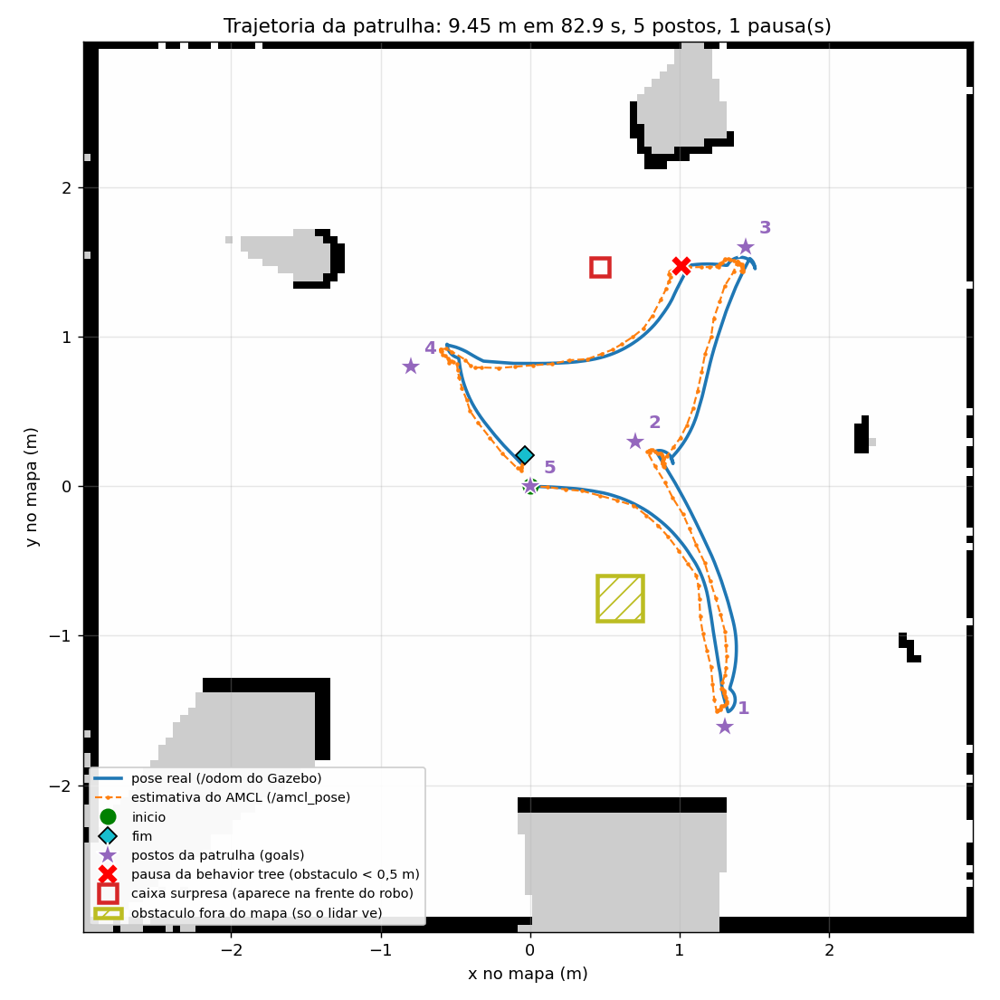
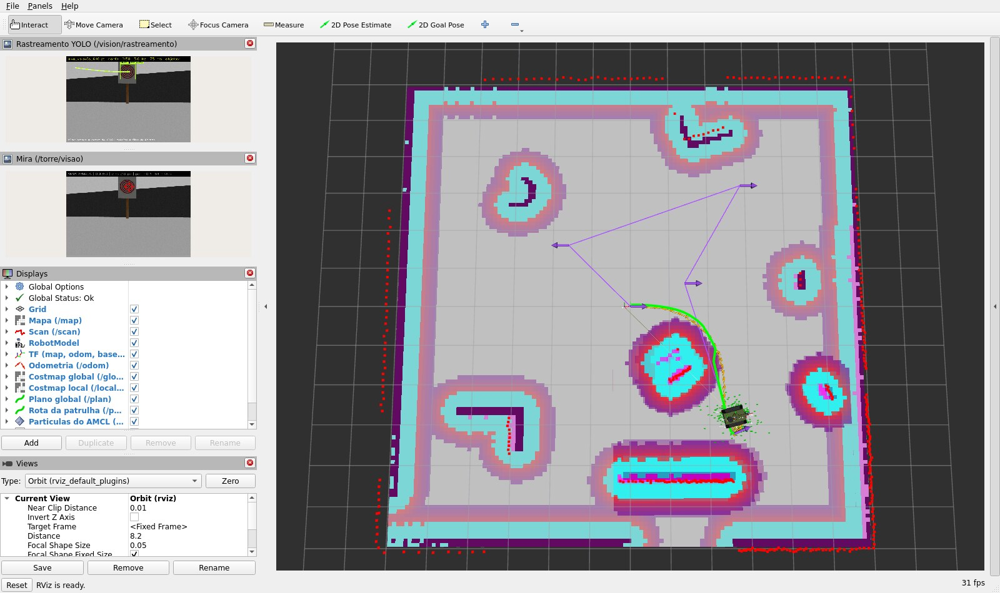
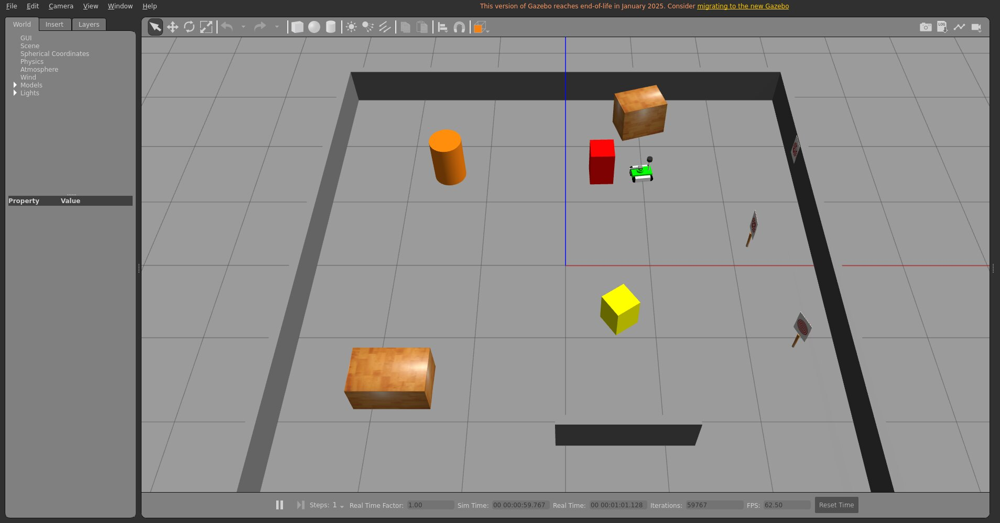
analise_bag a partir do bag: pose real e estimativa do AMCL sobre o mapa, os cinco postos (1 a 5), a pausa da behavior tree (X), a caixa surpresa e o caixote que não está no mapa. À direita, em cima, o RViz no primeiro trecho: costmaps global e local, o plano do Nav2 (verde) contornando o caixote que só o lidar vê, a rota da patrulha (roxo) e as partículas do AMCL; embaixo, o Gazebo durante a pausa, com o robô parado diante da caixa vermelha.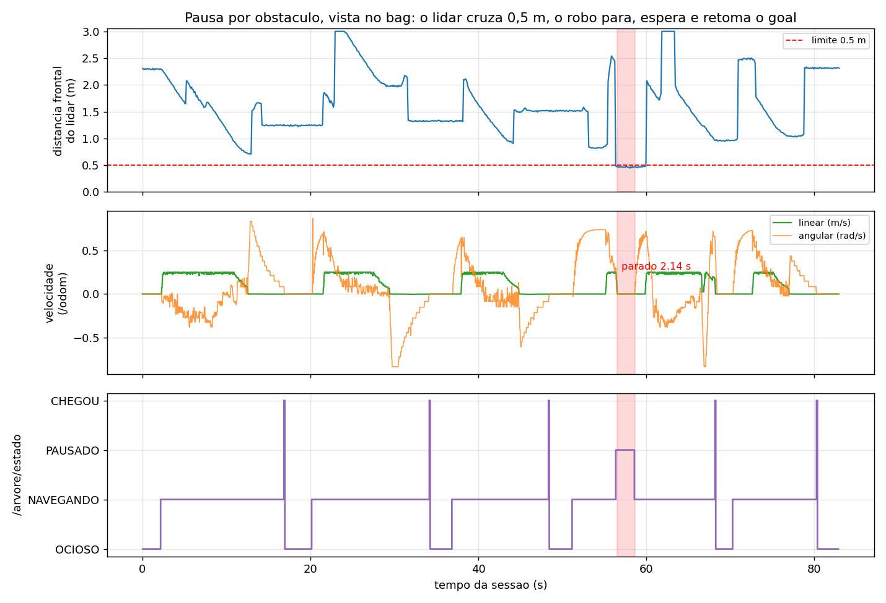
/odom vai a zero e fica 2,14 s parada (faixa vermelha). Embaixo, o estado publicado pela árvore: NAVEGANDO → PAUSADO → NAVEGANDO, até CHEGOU.Validacao offline da sessao de navegacao (dados do ros2 bag play)
duracao 82.9 s | percorrido 9.45 m | velocidade maxima 0.252 m/s
patrulha: 5 postos alcancados, 0 falhos, 3 disparos
AMCL x pose real (/odom do Gazebo): erro medio 0.063 m, maximo 0.099 m em 167 amostras
obstaculos a menos de 0.5 m no setor frontal de 60 graus: 1
1. t=56.35 s distancia 0.494 m arvore NAVEGANDO parou em 0.19 s ficou parado 2.14 s (PAUSADO 2.21 s) -> OK
[OK] toda deteccao a menos de 0.5 m parou o robo em ate 1.5 s por pelo menos 2.0 s (minimo de 1 pausa)
[OK] /arvore/estado ficou PAUSADO nesses intervalos
[OK] todos os postos da patrulha alcancados
RESULTADO: APROVADO
O bag da sessão (84 s, 10 668 mensagens, 6,8 MB) está em docs/evidencias/tp4/bag_patrulha/, com a saída do ros2 bag info em bag_info.txt.
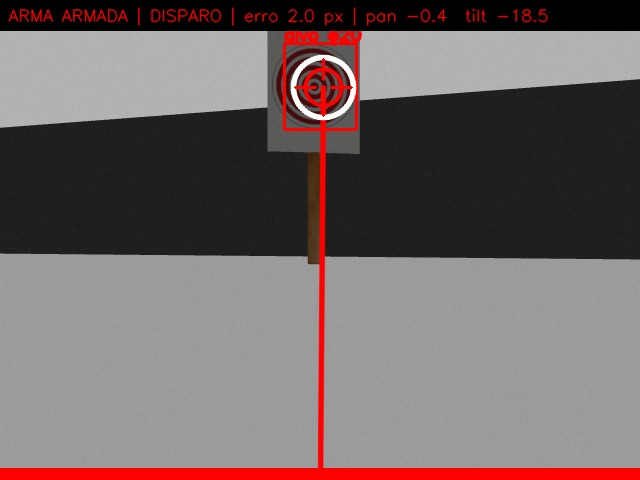
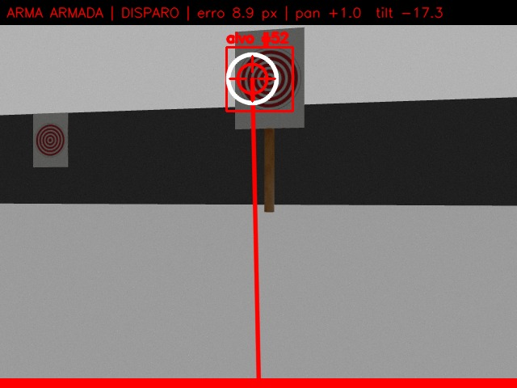
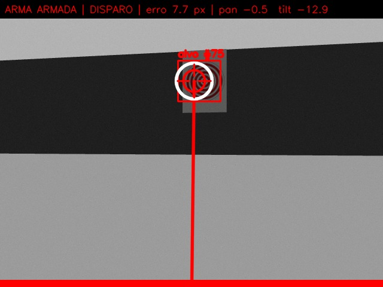
/torre/visao no instante do disparo em cada posto de tiro (alvos 2, 1 e 3): a navegação entrega o robô de frente para o alvo e a torre do TP2 trava e dispara em 0,5 a 1,1 s.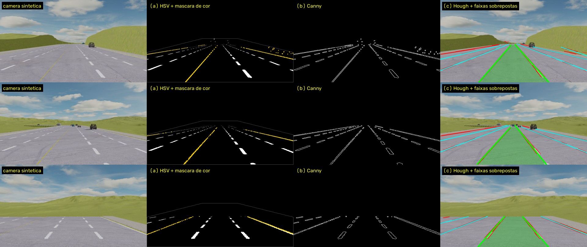
Em 300 frames do mapa de teste (retas e curvas), o pipeline achou alguma linha em todos e as duas linhas da faixa do veículo em 260 (86,7%): 94 de 101 nas retas e 131 de 164 nas curvas. O erro contra a borda real da faixa no simulador, projetada na imagem, tem mediana de 1,7 px à esquerda e 1,3 px à direita; o percentil 90 sobe a 75 px à esquerda por causa das curvas fechadas, onde uma reta do Hough não acompanha a pista. Custo: 2,6 ms por frame.
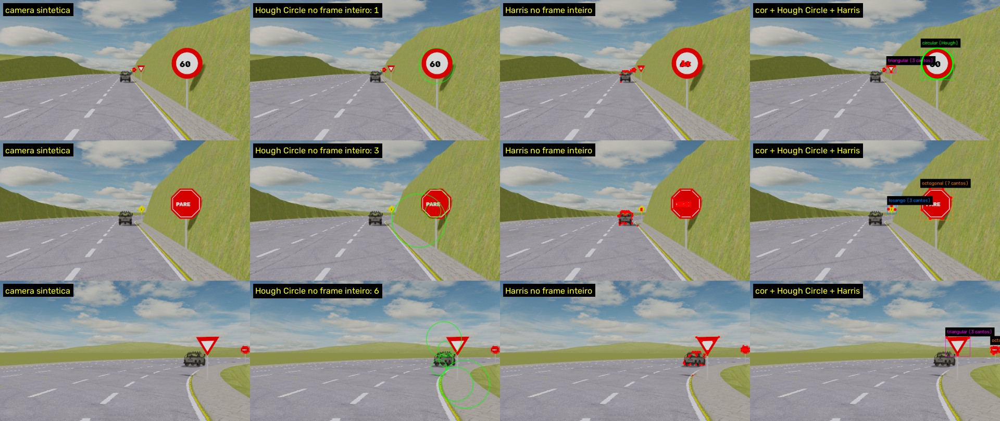
| Forma | Aparições (raio ≥ 10 px) | Forma certa | Taxa |
|---|---|---|---|
| circular (Hough Circle) | 87 | 76 | 87,4% |
| triangular (3 cantos no Harris) | 80 | 76 | 95,0% |
| losango (4 cantos) | 65 | 62 | 95,4% |
| octogonal (5 a 9 cantos) | 65 | 61 | 93,8% |
| total | 297 | 275 | 92,6% |
Os erros estão todos nas placas pequenas: com raio aparente de 10 a 15 px a taxa é de 81,5% (97 de 119) e, a partir de 15 px, de 100% (178 de 178). Houve 1 falso positivo em 250 frames.
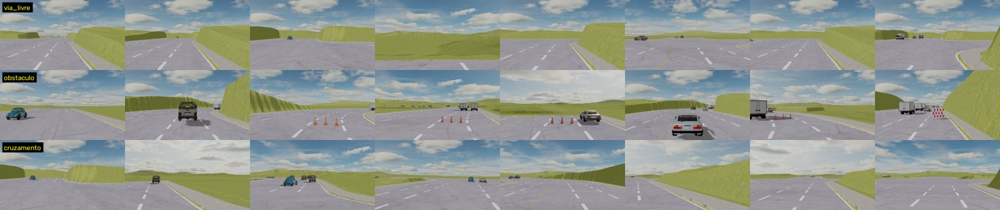
via_livre, obstaculo e cruzamento. São 500 frames de 320 × 180, 167 / 167 / 166 por classe; treino com 350 frames de 26 mapas, validação com 75 de 9 mapas e teste com 75 de 7 mapas, sem mapa repetido entre as partições.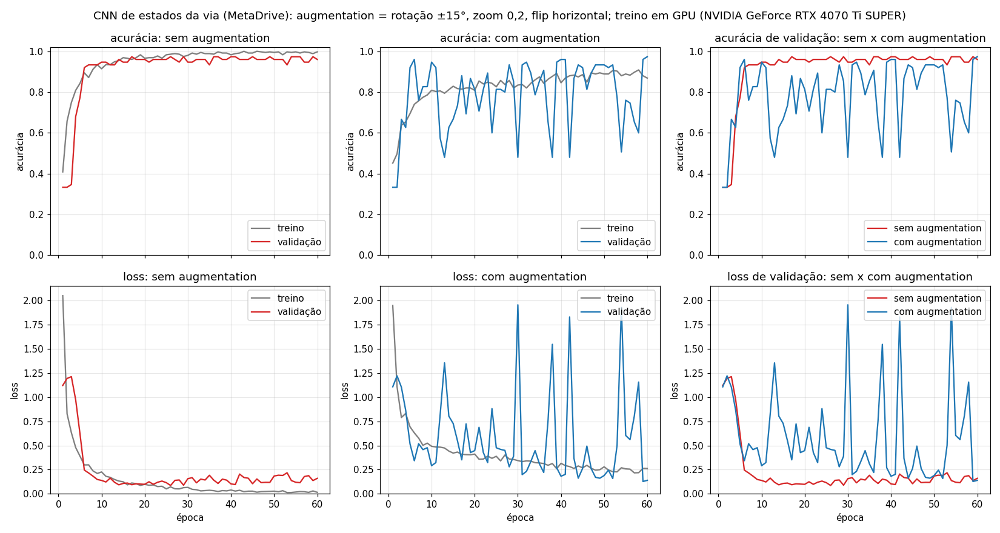
| Treino em | Variante | Treino | Validação | Teste | Teste perturbado | Treino − teste | Loss no teste | Tempo |
|---|---|---|---|---|---|---|---|---|
| GPU | sem augmentation | 1,000 | 0,973 | 0,827 | 0,640 | +0,173 | 0,564 | 27 s |
| GPU | com augmentation | 0,897 | 0,973 | 0,880 | 0,827 | +0,017 | 1,018 | 30 s |
| CPU | sem augmentation | 0,986 | 0,987 | 0,813 | 0,667 | +0,172 | 0,600 | 114 s |
| CPU | com augmentation | 0,886 | 0,987 | 0,867 | 0,787 | +0,019 | 0,728 | 83 s |
O teste perturbado são os 75 frames de teste com rotação de ±15°, zoom de 0,2 e flip sorteados uma vez. O que a comparação mostrou:
nav2_amcl::OmniMotionModel), o erro ficou em 6 cm, giros incluídos.Failed to make progress ao chegar: a árvore padrão do Nav2 replaneja a cada 1 s, e cada caminho novo zera o estado do DWB, inclusive a marca de “já cheguei”. Como a esteira desloca o centro do robô em até 10 cm no giro final, ele saía da tolerância e o DWB alternava entre voltar ao ponto e girar para a orientação do goal, em sentidos opostos. Resolvido com a árvore interna que só replaneja quando o caminho fica inválido e com o Rotation Shim. Sobrou um caso raro (uma vez em quatro patrulhas): com a mesma tolerância de posição no DWB e no verificador de chegada, o robô entrava nela no limite, o DWB parava para girar e o verificador não marcava a chegada. A tolerância do DWB ficou em 0,12 m e a do verificador em 0,25 m; depois disso, nenhuma falha em quatro patrulhas seguidas.ambiente.sh passou a subir o daemon direto.Cannot dlopen some GPU libraries). O treinar_cnn põe essas pastas no LD_LIBRARY_PATH e se reexecuta uma vez; sem GPU, ou com --dispositivo cpu, o treino segue na CPU.cv_bridge do ROS 2 Humble só funciona com numpy 1.x. Por isso o pacote tp4_extras tem o seu venv e não cria nós do ROS.ros2_control), previsto no plano, não foi feito: o enunciado não pede e a torre continua simulada pelo servidor_engajar. O simulador continua o Gazebo Classic 11. Os itens do MetaDrive só foram validados com tela (WSLg); o caminho sem servidor X, com xvfb-run, está no script mas não foi testado. O /odom do plugin das esteiras é a pose real do robô no mundo, não odometria de encoder; por isso o AMCL tem vida fácil na simulação, e no robô real a odometria terá de vir de outra fonte.ros2_control, para a mira deixar de ser simulada dentro do servidor_engajar. Estava no plano deste TP e ficou registrado em docs/decisoes.md./odom da simulação é a pose real do robô. Antes do robô físico é preciso navegar com odometria de encoder das esteiras (ou de lidar) e ver se o AMCL aguenta o escorregamento.params_uno_q.yaml).A ordem depende do enunciado do TP5.
bt_navigator): docs.nav2.org.rosbag2, Fast DDS): docs.ros.org/en/humble.docs/decisoes.md, docs/diario.md e os relatórios dos TPs anteriores em docs/relatorios/.